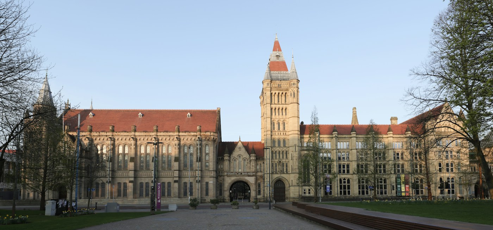

PLAN YOUR VISIT
Travel to Manchester
The workshop will take place in the Alan Turing Building, home to the Department of Mathematics at the University of Manchester.
THE VENUE
Alan Turing Building
Postal address
Alan Turing Building, Oxford Road, Manchester M13 9PL, United KingdomFrank Adams 1
All talks will be held in the room Frank Adams 1, located on the first floor of the Alan Turing Building (one level above the ground floor). The room is fully accessible and has step-free access.
For navigation, search for 'Alan Turing Building'. Google Maps lists the same building on Upper Brook Street as M13 9SR; the University's postal address above uses M13 9PL.
GETTING HERE
Travel & accommodation
For official directions to the department and links to campus maps and travel information, please visit the Department's maps and travel page.
We also recommend the excellent useful information for visitors to Manchester page maintained by Mark Kambites, particularly its advice on accommodation.
For questions about your visit or access requirements, please contact the organising committee at manchester-stein@manchester.ac.uk.
